Mortgage loan values fluctuations from 2012 to 2025 in Canada
Author
Alexandros Karagiannis 1009071718
Published
March 27, 2026
# Install packages install.packages("readxl")
Installing package into '/usr/local/lib/R/site-library'
(as 'lib' is unspecified)
install.packages("tidyverse")
Installing package into '/usr/local/lib/R/site-library'
(as 'lib' is unspecified)
install.packages("lubridate")
Installing package into '/usr/local/lib/R/site-library'
(as 'lib' is unspecified)
############################################## STAA57 Project# Average Value of New Mortgage Loans# Data cleaning and preparation############################################## readxl lets us read Excel fileslibrary(readxl)# tidyverse gives us dplyr, tidyr, ggplot2, stringr, etc.library(tidyverse)
── Attaching core tidyverse packages ──────────────────────── tidyverse 2.0.0 ──
✔ dplyr 1.1.4 ✔ readr 2.1.5
✔ forcats 1.0.0 ✔ stringr 1.5.1
✔ ggplot2 3.5.0 ✔ tibble 3.2.1
✔ lubridate 1.9.3 ✔ tidyr 1.3.1
✔ purrr 1.0.2
── Conflicts ────────────────────────────────────────── tidyverse_conflicts() ──
✖ dplyr::filter() masks stats::filter()
✖ dplyr::lag() masks stats::lag()
ℹ Use the conflicted package (<http://conflicted.r-lib.org/>) to force all conflicts to become errors
# lubridate helps us work with dateslibrary(lubridate)############################################## 1. Import the Excel file############################################## Read the Excel sheet exactly as it appears# We use col_names = FALSE because the first few rows are title rows,# not the actual variable namesmortgage_raw <-read_excel("~/Statistical_Reports_Portfolio/average-value-new-mortgage-loans-ca-prov-cmas-2012-q3-2025-q4-en.xlsx",sheet ="New mortgage loan",col_names =FALSE)
############################################## 2. Extract the real column names############################################## In this spreadsheet, row 4 contains the actual headers# such as Geography, 2012Q3, 2012Q4, ..., 2025Q4quarter_names <- mortgage_raw %>%# Keep only row 4slice(4) %>%# Convert that one-row tibble into a simple vectorunlist(use.names =FALSE) %>%# Make sure everything is stored as textas.character()# Replace the default Excel column names (...1, ...2, etc.)# with the actual names from row 4colnames(mortgage_raw) <- quarter_names############################################## 3. Keep only the rows that contain data############################################## The first few rows of the spreadsheet contain title text and notes,# not actual observations# We keep the rows that contain Canada, provinces, headers,# and CMAs, then rename Geography to geography for conveniencemortgage_data <- mortgage_raw %>%slice(5:51) %>%rename(geography = Geography)############################################## 4. Classify each row by geography type############################################## We create a new variable called geo_level# This tells us whether each row is:# - Canada# - a Province# - a section header# - a CMAmortgage_data <- mortgage_data %>%mutate(geo_level =case_when(# Canada row geography =="Canada"~"Canada",# Province rows geography %in%c("Newfoundland","Prince Edward Island","Nova Scotia","New Brunswick","Québec","Ontario","Manitoba","Saskatchewan","Alberta","British Columbia" ) ~"Province",# These are not actual data rows# They are just labels inside the spreadsheet geography %in%c("Provinces", "Selected Metropolitan Areas") ~"header",# Everything else is treated as a CMATRUE~"CMA" ) )############################################## 5. Remove the header rows############################################## We no longer need the rows called "Provinces"# and "Selected Metropolitan Areas" because they do not contain datamortgage_data <- mortgage_data %>%filter(geo_level !="header")############################################## 6. Convert the dataset from wide to long format############################################## Right now the data are in wide format:# one row per geography, with many quarter columns## We want it in long format:# one row per geography-quarter combination## This makes it much easier to summarize, graph, and model the datamortgage_long <- mortgage_data %>%pivot_longer(cols =-c(geography, geo_level),# Name of the new column that stores quarter labelsnames_to ="quarter",# Name of the new column that stores mortgage valuesvalues_to ="avg_mortgage_value" )############################################## 7. Clean the mortgage value column############################################## The mortgage values came in as text because they contain commas# Example: "223,074"# We remove commas, then convert to numericmortgage_long <- mortgage_long %>%mutate(# Remove commasavg_mortgage_value =gsub(",", "", avg_mortgage_value),# Convert from character to numericavg_mortgage_value =as.numeric(avg_mortgage_value) )############################################## 8. Create separate province and CMA variables############################################## We split geography into two variables:# - geo_province for Canada and provinces# - geo_cma for metropolitan areas## This makes later analysis cleaner because province# and CMA data can be handled separatelymortgage_long <- mortgage_long %>%mutate(geo_province =case_when(# Canada goes into geo_province geo_level =="Canada"~"Canada",# Provinces go into geo_province geo_level =="Province"~ geography,# CMAs get missing value hereTRUE~NA_character_ ),geo_cma =case_when(# CMA names go into geo_cma geo_level =="CMA"~ geography,# Canada and provinces get missing value hereTRUE~NA_character_ ) )############################################## 9. Create time variables############################################## We also need several time-related variables for tables, graphs, and regression:# - year# - quarter number# - quarter_date## Example:# quarter = "2012Q3"# year = 2012# quarter_num = 3# quarter_date = 2012-07-01mortgage_long <- mortgage_long %>%mutate(# Extract first 4 characters from "2012Q3" -> "2012"year =as.numeric(str_sub(quarter, 1, 4)),# Extract the 6th character from "2012Q3" -> "3"quarter_num =as.numeric(str_sub(quarter, 6, 6)),# Convert "2012Q3" into a real quarterly date# First make it look like "2012: Q3"quarter_date =yq(str_replace(quarter, "Q", ": Q")) )############################################## 10. Create a correct numeric time index############################################## We want one numeric index for each quarter:# 2012Q3 = 1, 2012Q4 = 2, 2013Q1 = 3, etc.## We cannot simply use row_number() inside mortgage_long# because each quarter appears many times, once for each geography## So first we create a small lookup table# with one row per distinct quarterquarter_lookup <- mortgage_long %>%# Keep only unique quarter combinationsdistinct(quarter, year, quarter_num, quarter_date) %>%# Sort quarters in chronological orderarrange(year, quarter_num) %>%# Assign a running number to each quartermutate(time_index =row_number())# Join that correct time index back into the full datasetmortgage_long <- mortgage_long %>%left_join( quarter_lookup,by =c("quarter", "year", "quarter_num", "quarter_date") )############################################## 11. Create separate province and CMA datasets############################################## Province dataset:# keep Canada and provinces onlymortgage_province <- mortgage_long %>%filter(geo_level %in%c("Canada", "Province"))# CMA dataset:# We decided to keep only the six selected CMAs# Also for convebience we renamed Ottawa-Gatineau to Ottawa for simpler labelsmortgage_cma <- mortgage_long %>%filter(geo_cma %in%c("Toronto","Vancouver","Montréal","Calgary","Ottawa-Gatineau","Halifax" )) %>%mutate(geo_cma =case_when( geo_cma =="Ottawa-Gatineau"~"Ottawa",TRUE~ geo_cma ) )############################################## 12. Quick checks############################################## Look at the structure of the cleaned full datasetglimpse(mortgage_long)
# Summary statistics for the mortgage valuessummary(mortgage_long$avg_mortgage_value)
Min. 1st Qu. Median Mean 3rd Qu. Max.
108877 195237 246774 264144 316394 577403
# Counting how many rows belong to each geography leveltable(mortgage_long$geo_level)
Canada CMA Province
54 1836 540
# Making sure all provinces are presentmortgage_long %>%filter(geo_level =="Province") %>%distinct(geography)
# A tibble: 10 × 1
geography
<chr>
1 Newfoundland
2 Prince Edward Island
3 Nova Scotia
4 New Brunswick
5 Québec
6 Ontario
7 Manitoba
8 Saskatchewan
9 Alberta
10 British Columbia
# Lastly making sure our selceted CMA names are present in the selected CMA datasetunique(mortgage_cma$geo_cma)
############################################## 13. Descriptive statistics tables############################################## In this part we focus on the overall summary for the full cleaned dataset# This gives one quick picture of the distribution of mortgage loan values across all places and quartersmortgage_long %>%summarise(n =n(), # total number of observationsmean_value =mean(avg_mortgage_value, na.rm =TRUE), # average mortgage valuemedian_value =median(avg_mortgage_value, na.rm =TRUE), # middle valuesd_value =sd(avg_mortgage_value, na.rm =TRUE), # standard deviationmin_value =min(avg_mortgage_value, na.rm =TRUE), # smallest valuemax_value =max(avg_mortgage_value, na.rm =TRUE) # largest value )
############################################## 14. Graph 1: Canada over time############################################## This line graph shows how the average value of new mortgage loans in Canada changes over timeggplot( mortgage_province %>%filter(geo_province =="Canada"),aes(x = quarter_date, y = avg_mortgage_value)) +geom_line() +ggtitle("Average Value of New Mortgage Loans in Canada Over Time") +xlab("Quarter") +ylab("Average Mortgage Value ($)")
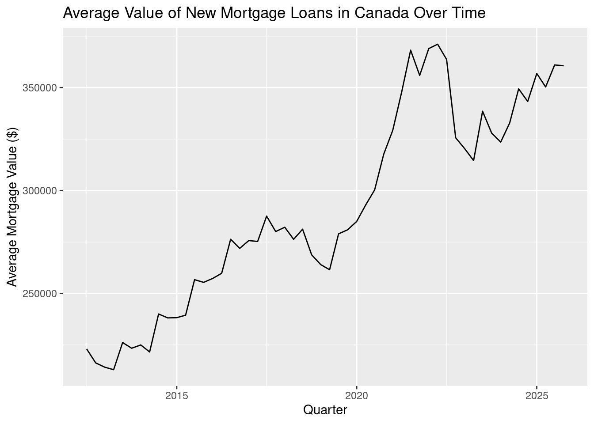
############################################## 15. Graph 2: Provinces over time############################################## This graph compares all provinces over time# Canada is excluded here so the province lines are easier to readggplot( mortgage_province %>%filter(geo_province !="Canada"),aes(x = quarter_date, y = avg_mortgage_value, color = geo_province)) +geom_line() +ggtitle("Average New Mortgage Loan Values by Province") +xlab("Quarter") +ylab("Average Mortgage Value ($)") +theme(legend.position ="bottom")
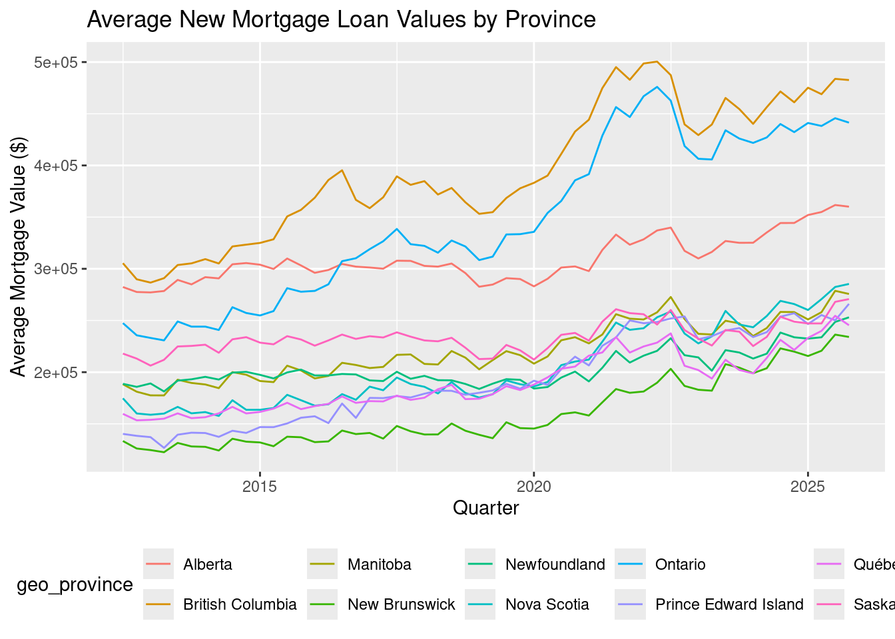
############################################## 16. Graph 3: Selected CMAs over time############################################## This graph compares the 6 selected CMAs over timeggplot( mortgage_cma,aes(x = quarter_date, y = avg_mortgage_value, color = geo_cma)) +geom_line() +ggtitle("Average New Mortgage Loan Values in Selected CMAs") +xlab("Quarter") +ylab("Average Mortgage Value ($)") +theme(legend.position ="bottom")
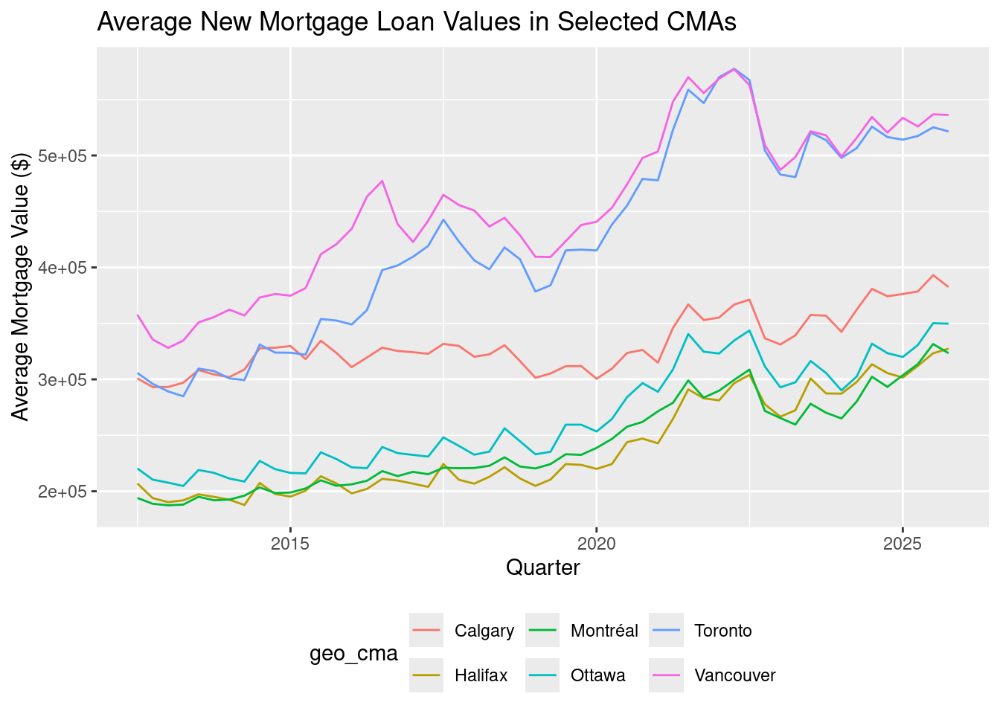
############################################## 17. Graph 4: Province boxplot############################################## This boxplot compares the overall distribution of mortgage values across provincesggplot( mortgage_province %>%filter(geo_province !="Canada"),aes(x = geo_province, y = avg_mortgage_value)) +geom_boxplot() +ggtitle("Distribution of Mortgage Loan Values by Province") +xlab("Province") +ylab("Average Mortgage Value ($)") +theme(axis.text.x =element_text(angle =45, hjust =1))
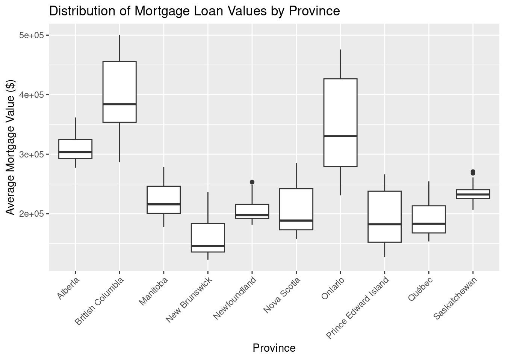
############################################## 18. Graph 5: CMA boxplot############################################## This boxplot compares the overall distribution across the 6 selected metropolitan areasggplot( mortgage_cma,aes(x = geo_cma, y = avg_mortgage_value)) +geom_boxplot() +ggtitle("Distribution of Mortgage Loan Values in Selected CMAs") +xlab("CMA") +ylab("Average Mortgage Value ($)")
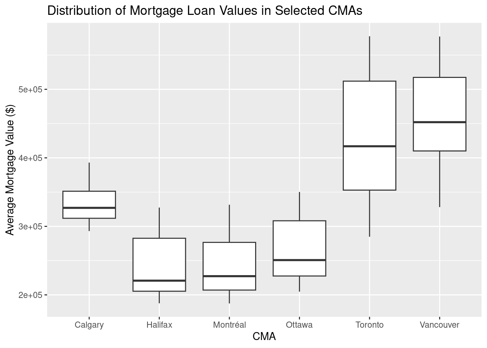
ggplot( mortgage_province %>%filter(geo_province =="Canada"),aes(x = time_index, y = avg_mortgage_value)) +geom_point() +geom_smooth(method ="lm", se =FALSE) +ggtitle("Trend in Average Mortgage Value in Canada") +xlab("Time Index") +ylab("Average Mortgage Value ($)")
`geom_smooth()` using formula = 'y ~ x'
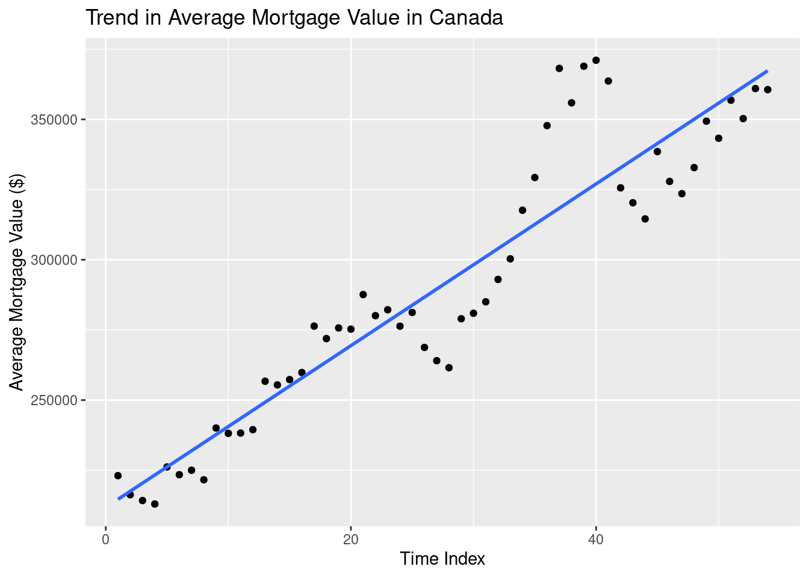
province_summary %>%ggplot(aes(x =reorder(geo_province, mean_value), y = mean_value)) +geom_col() +coord_flip() +ggtitle("Average Mortgage Loan Value by Province") +xlab("Province") +ylab("Mean Mortgage Value ($)")
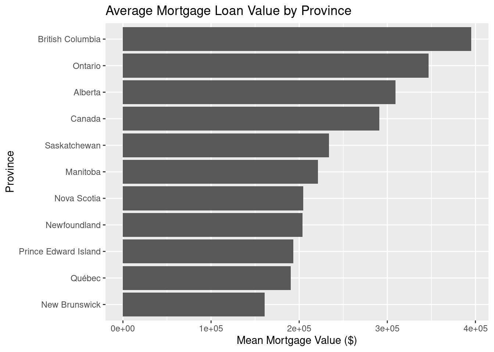
cma_summary %>%ggplot(aes(x =reorder(geo_cma, mean_value), y = mean_value)) +geom_col() +coord_flip() +ggtitle("Average Mortgage Loan Value by Selected CMA") +xlab("CMA") +ylab("Mean Mortgage Value ($)")
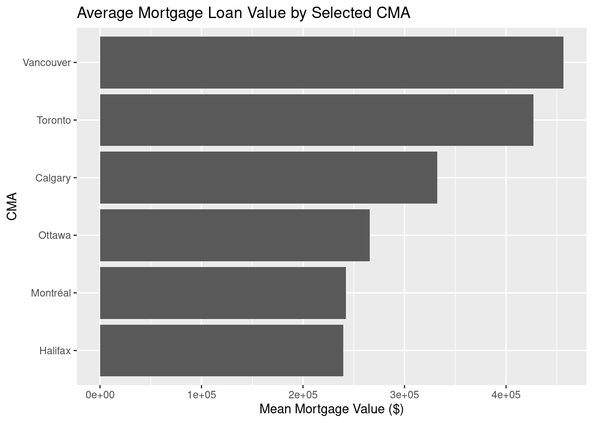
ggplot( mortgage_cma,aes(x = quarter_date, y = avg_mortgage_value)) +geom_line() +facet_wrap(~ geo_cma) +ggtitle("Average New Mortgage Loan Values Over Time by Selected CMA") +xlab("Quarter") +ylab("Average Mortgage Value ($)")
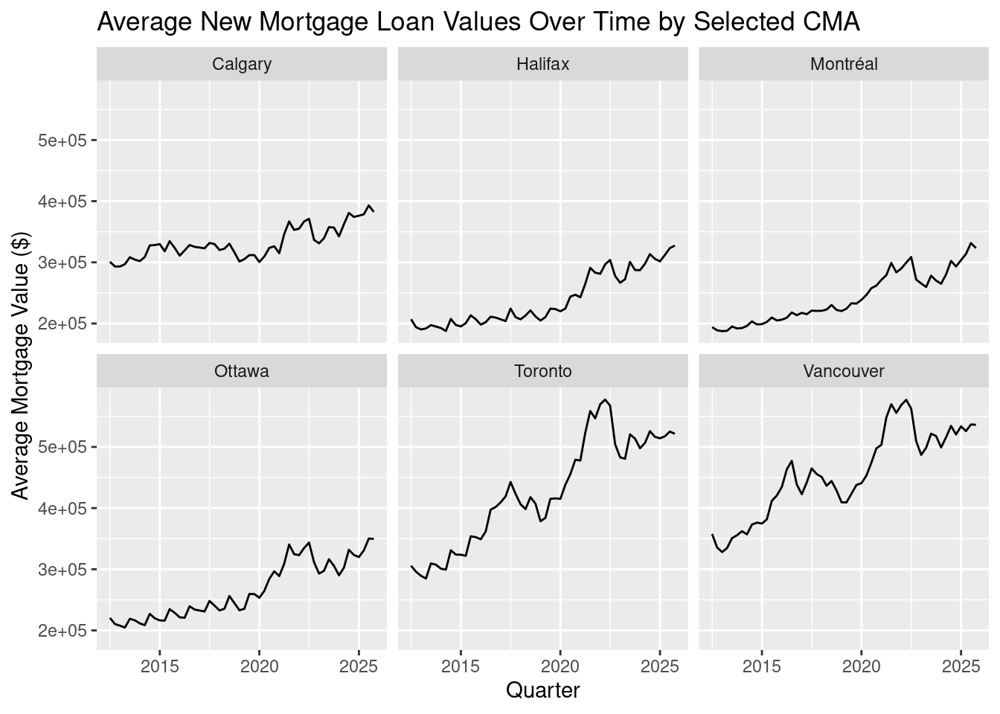
############################################## Inferential statistics and modeling########################################################################## 1. Confidence Interval############################# We will compute a 95% confidence interval for the mean average mortgage loan value in Ontario across all quarters.# Ergo, we select only Ontario observationsontario_data <- mortgage_province %>%filter(geo_province =="Ontario")# Our first step is to Run a one-sample t confidence interval for the mean# This will gives us:# - sample mean# - 95% confidence interval# - test of whether the mean equals 0 ontario_ci <-t.test(ontario_data$avg_mortgage_value, conf.level =0.95)ontario_ci
One Sample t-test
data: ontario_data$avg_mortgage_value
t = 32.956, df = 53, p-value < 2.2e-16
alternative hypothesis: true mean is not equal to 0
95 percent confidence interval:
325740.7 367960.8
sample estimates:
mean of x
346850.7
############################# 2. Hypothesis Test############################# We will test whether Ontario and British Columbia have the same mean mortgage loan value across all quarters.# Null hypothesis: mean Ontario = mean British Columbia# Alternative hypothesis: mean Ontario != mean British Columbia# So we keep only Ontario and British Columbiaontario_british_columbia_data <- mortgage_province %>%filter(geo_province %in%c("Ontario", "British Columbia"))# Our next step is to Run a two-sample t-test. This will compare the mean mortgage value between the two provincesprovince_test <-t.test( avg_mortgage_value ~ geo_province,data = ontario_british_columbia_data,conf.level =0.95)province_test
Welch Two Sample t-test
data: avg_mortgage_value by geo_province
t = 3.5201, df = 102.85, p-value = 0.0006443
alternative hypothesis: true difference in means between group British Columbia and group Ontario is not equal to 0
95 percent confidence interval:
21101.56 75567.29
sample estimates:
mean in group British Columbia mean in group Ontario
395185.2 346850.7
############################# 3. Bootstrapping############################# Moving on, we will bootstrap the difference in mean mortgage values between Ontario and British Columbia.# Set a seed so results are reproducibleset.seed(57)# Extract the two province vectorsontario_values <- ontario_british_columbia_data %>%filter(geo_province =="Ontario") %>%pull(avg_mortgage_value)bc_values <- ontario_british_columbia_data %>%filter(geo_province =="British Columbia") %>%pull(avg_mortgage_value)# Observed difference in means# Ontario mean minus British Columbia meanobserved_diff <-mean(ontario_values) -mean(bc_values)# Number of bootstrap samplesB <-5000# Create an empty vector to store bootstrap differencesboot_diffs <-numeric(B)# Bootstrap loopfor (i in1:B) {# Resample Ontario values with replacement boot_ontario <-sample(ontario_values,size =length(ontario_values),replace =TRUE)# Resample Québec values with replacement boot_bc <-sample(bc_values,size =length(bc_values),replace =TRUE)# Store the difference in bootstrap means boot_diffs[i] <-mean(boot_ontario) -mean(boot_bc)}# Bootstrap summarybootstrap_summary <-tibble(observed_difference = observed_diff,bootstrap_mean =mean(boot_diffs),bootstrap_sd =sd(boot_diffs),lower_95_CI =quantile(boot_diffs, 0.025),upper_95_CI =quantile(boot_diffs, 0.975))bootstrap_summary
# This a histogram of bootstrap differencesggplot(tibble(boot_diffs = boot_diffs), aes(x = boot_diffs)) +geom_histogram(bins =30) +ggtitle("Bootstrap Distribution of Mean Difference: Ontario - British Columbia") +xlab("Difference in Mean Mortgage Value ($)") +ylab("Frequency")
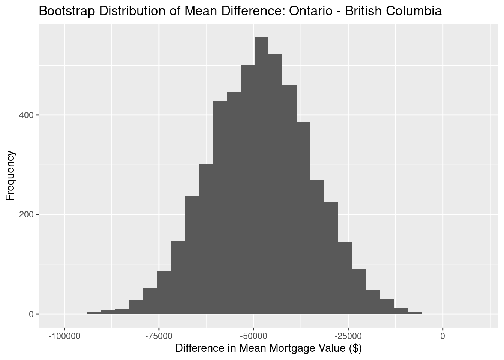
############################# 4. Regression Analysis############################# We will fit a linear regression model using the province data.# Canada is excluded here so that the province comparison is cleaner.province_reg_data <- mortgage_province %>%filter(geo_province !="Canada") %>%mutate(geo_province =as.factor(geo_province) )# Model 1:# Average mortgage value explained by time and province# Interpretation:# - time_index coefficient = average change per quarter# - province coefficients = differences from the reference provincemodel_1 <-lm(avg_mortgage_value ~ time_index + geo_province,data = province_reg_data)summary(model_1)
# fitted values plotggplot(province_reg_data, aes(x = time_index, y = avg_mortgage_value)) +geom_point(alpha =0.4) +geom_smooth(method ="lm", se =FALSE) +ggtitle("Scatterplot with Linear Trend: Mortgage Value vs Time") +xlab("Time Index") +ylab("Average Mortgage Value ($)")
`geom_smooth()` using formula = 'y ~ x'
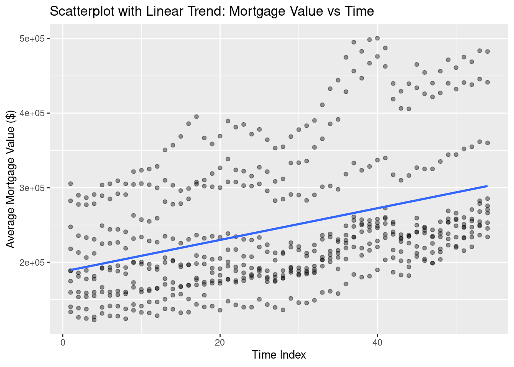
# Interaction model:# This allows each province to have a different slope over timemodel_2 <-lm(avg_mortgage_value ~ time_index * geo_province,data = province_reg_data)summary(model_2)
# Here we compare the two modelsanova(model_1, model_2)
Analysis of Variance Table
Model 1: avg_mortgage_value ~ time_index + geo_province
Model 2: avg_mortgage_value ~ time_index * geo_province
Res.Df RSS Df Sum of Sq F Pr(>F)
1 529 3.2087e+11
2 520 1.2412e+11 9 1.9675e+11 91.59 < 2.2e-16 ***
---
Signif. codes: 0 '***' 0.001 '**' 0.01 '*' 0.05 '.' 0.1 ' ' 1
############################# 5. Cross-Validation (5-fold cross-validation.)############################# We will do manual 5-fold cross-validation for model_1.# This evaluates how well the regression predicts unseen data.set.seed(57)# Number of foldsk <-5# Each row is randomly assigned to one of 5 foldsprovince_reg_data <- province_reg_data %>%mutate(fold =sample(rep(1:k, length.out =n())))# Create an empty vector to store RMSE valuesrmse_values <-numeric(k)# Cross-validation loopfor (j in1:k) {# Training data = all rows NOT in fold j train_data <- province_reg_data %>%filter(fold != j)# Test data = rows in fold j test_data <- province_reg_data %>%filter(fold == j)# Fit the regression model on the training set cv_model <-lm(avg_mortgage_value ~ time_index + geo_province,data = train_data)# Predict mortgage values for the test set predictions <-predict(cv_model, newdata = test_data)# Compute RMSE for this fold rmse_values[j] <-sqrt(mean((test_data$avg_mortgage_value - predictions)^2))}# Summarize cross-validation resultscv_summary <-tibble(fold =1:k,RMSE = rmse_values)cv_summary